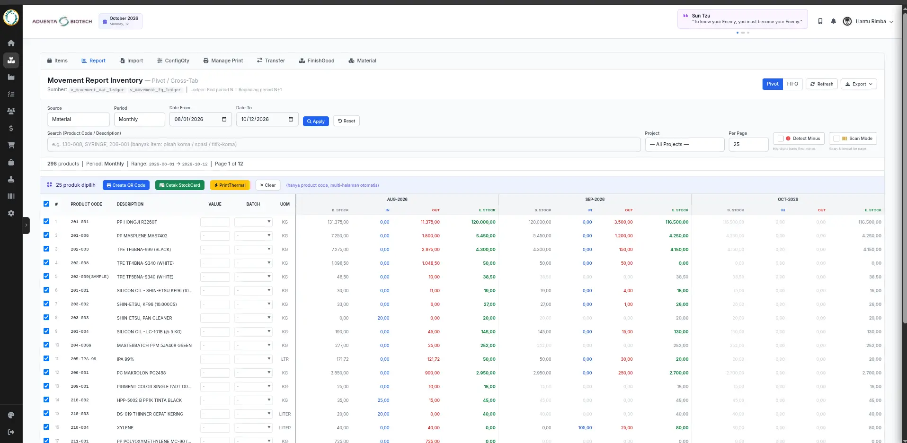

Arie Anggono
Halo, Saya seorang IT System Analyst dengan pengalaman lebih dari 10 tahun di bidang pengembangan dan pengelolaan sistem ERP, SAP S/4HANA, dan Machine Learning.
Contact meFinish Project
20+
Client
5+
Years of Experience
10+
Fullstack Developer
10+ Project
SAP ABAPer
20+ Program
Machine Learning
AI Enthusiast
Tentang Saya
Halo, Senior IT Analyst & ABAP Developer dengan lebih dari 10 tahun pengalaman dalam pengembangan, integrasi, dan optimalisasi sistem ERP. Menguasai ABAP Programming (ABAP OO, BADI, BAPI, User Exit), IDoc, RFC, OData Services, CDS Views, serta implementasi dan support modul SAP MM, PP, dan SD. Berpengalaman dalam migrasi sistem ke SAP S/4HANA, performance tuning, advanced debugging, dan integrasi sistem menggunakan REST API, OData, dan IDoc Interface. Memiliki kemampuan analisis kebutuhan bisnis, penyusunan Functional & Technical Specifications, serta memimpin end-to-end development mulai dari system design, coding, unit testing, SIT/UAT, hingga deployment. Terbiasa berkolaborasi dengan user dan stakeholder lintas departemen untuk memastikan proses ERP berjalan efisien dan terkontrol. Selain SAP, juga memiliki pengalaman dalam pengembangan Custom ERP menggunakan pendekatan VIBE Engineering (Value, Impact, Business Flow, Efficiency) untuk merancang solusi enterprise yang modular, scalable, dan selaras dengan proses bisnis perusahaan. Berpengalaman membangun modul custom seperti procurement, inventory, finance, dan workflow automation berbasis web API. Memiliki kompetensi tambahan dalam Purchasing IT Device & Infrastructure, meliputi procurement perangkat IT (server, storage, network, endpoint), vendor evaluation, RFQ management, negosiasi harga, pembuatan Purchase Order (PO), serta IT asset control dan lifecycle management.
Fullstack Developer
- Planning ERP - Merancang kebutuhan sistem untuk diimplementasikan
- Developing - Membangun Sistem ERP Customize (Flask) sesuai kebutuhan bisnis
- Implementator - Testing, Implementasi dan perbaiki bug
ABAPer (SAP ABAP Developer)
- ABAP Programming - Menguasai sintaks dan struktur bahasa ABAP
- ALV Reporting - Membuat laporan menggunakan ALV Grid/Tree
- Data Dictionary - Mengelola tabel, struktur, domain, dan view
Resume
Pengalaman
Sr. IT Programmer
PT. Hanchen Industrial Indonesia
- • Fullstack Developer Customize ERP
- • ERP Implementator
- • AI Agent ollama on local
Sr. IT Inventory
PT. Asia Pacific Fibers
- • Inventory Management: bahan baku, barang dalam proses (WIP) & barang jadi
- • Integrasi ERP lokal dengan INSW (Indonesia National Single Window) & CEISA 4.0 DJBC
- • Neraca persediaan, Kartu Kendali & audit kawasan berikat
- • Pengembangan modul inventory berbasis barcode (FIFO & average costing)
Sr. IT Analyst
PT. Asia Pacific Fibers
- • Backend & Frontend Development
- • ABAPer, Model Training & Development
- • DevOps Integration
IT Master Control
PT. TVKU Semarang
- • Database Administrator
- • Programmer
Pendidikan
Achievement
- ERP Solution - Merancang, Development dan Implementasi Custom ERP
- SAP S/4 HANA - Migrasi ERP tanpa downtime besar, 20+ program ABAP
- IT Support - SLA >96%, Mikrotik & bandwidth management
Technical Skills
Portfolio
Customize ERP (Full Integration)
Flask, PostgreSQL, SQLAlchemy, Tabulator.js
Masalah
Perusahaan butuh ERP terintegrasi seluruh departemen dengan scope custom sesuai kebutuhan bisnis.
Solusi
- • ERP modular: HR, Finance, Inventory, Production, Purchasing, Exim
- • FIFO & Average Costing otomatis
- • QR-code & integrasi antar departemen
- • CI/CD + backup & restore otomatis
- • Integrasi API CEISA 4.0 untuk kawasan berikat
Dampak
- ✔ Semua departemen terintegrasi satu sistem
- ✔ Audit bulanan: 3 hari → 6 jam
- ✔ Jadi backbone operasional perusahaan
Integrasi API CEISA 4.0 (Kawasan Berikat)
CEISA (Customs-Excise Information System and Automation) 4.0 adalah sistem terbaru DJBC untuk pengelolaan dokumen kepabeanan di kawasan berikat.
- Sistem inhouse perusahaan langsung terhubung dengan sistem DJBC
- Mengurangi redudansi pembuatan dokumen
- Memperkecil potensi kesalahan
- Pertukaran data real-time yang dapat disesuaikan kebutuhan perusahaan
Online Memo Management System (QR-based)
Flask, PostgreSQL, JavaScript, qrcode.js
Masalah
Memo manual kertas menyebabkan duplikasi dan proses approval lambat.
Solusi
- • Generate 6-digit alphanumeric code otomatis
- • QR code generator + printable memo
- • Validasi memo expiry & usage
Dampak
- ✔ Mengurangi kesalahan manual & duplikasi
- ✔ Proses approval lebih cepat dan rapi
Surat Jalan Generator + Auto Stock Reduction
Flask, PostgreSQL, SQLAlchemy, Bootstrap
Masalah
Pembuatan surat jalan manual menyebabkan ketidaksesuaian stok dan transaksi tidak terlacak.
Solusi
- • Surat jalan otomatis dari data produk
- • Auto pengurangan stok real-time
- • Validasi: tolak jika stok tidak cukup
- • Semua aktivitas tercatat di history_inout
Dampak
- ✔ Human error berkurang drastis
- ✔ Logistik lebih transparan
- ✔ Semua transaksi dapat ditelusuri
SAP ABAP Custom Module (Enhancement & Integration)
ABAP OO, BAPI, BADI, SAP S/4HANA
Masalah
User SAP memiliki beban manual berat dan management tidak bisa tracking produksi real-time.
Solusi
- • Modul custom monitoring produksi
- • Laporan harian dengan filter dinamis
- • Integrasi data eksternal → SAP
- • Otomasi via enhancement point
Dampak
- ✔ Mengurangi beban manual user SAP
- ✔ Tracking real-time output produksi
IT Infrastructure Automation & SOP Backup
Linux, Cron, Rsync, Shell Script, Docker
Masalah
Tidak ada prosedur backup standar, risiko data loss, dan recovery time lama.
Solusi
- • SOP lengkap backup & restore
- • Script backup harian otomatis (DB + file)
- • Validasi backup + integrity check
- • Recovery procedure standar
Dampak
- ✔ Zero data-loss incident
- ✔ Recovery time < 20 menit
Inventory Management System (Bahan Baku, Barang Jadi & WIP)
ERP Lokal + Integrasi INSW (DJBC/CEISA 4.0), PostgreSQL, Barcode/QR, FIFO & Average Costing

1 / 111. Dashboard IT Inventory
—
Masalah
Pencatatan persediaan bahan baku, barang dalam proses, dan barang jadi terpisah dari dokumen pabean — neraca gudang sering tidak konsisten dengan data DJBC dan audit berjalan lama.
Solusi
- • Modul persediaan terintegrasi: bahan baku, barang dalam proses (WIP), barang jadi & sparepart
- • Auto-generate dokumen pabean (PIB/PEB, BC 2.7/2.5/3.4/4.0) via INSW dari transaksi ERP
- • FIFO & average costing otomatis + barcode/QR per item
- • Stock opname & rekonsiliasi neraca vs dokumen pabean (Kartu Kendali)
Dampak
- ✔ Neraca gudang konsisten dengan data DJBC (zero discrepancy)
- ✔ Audit kawasan berikat jauh lebih cepat & transparan
- ✔ Redundansi pembuatan dokumen pabean berkurang drastis
Integrasi INSW — Indonesia National Single Window (ERP Lokal ↔ Sistem Pabean)
INSW (Indonesia National Single Window) adalah sistem elektronik nasional tunggal untuk penyampaian dokumen dan data pabean serta perizinan perdagangan, sesuai amanat UU No. 17 Tahun 2006 tentang Kepabeanan dan komitmen ASEAN Single Window. Melalui integrasi ini, ERP lokal terhubung langsung dengan sistem DJBC (CEISA 4.0).
- Dokumen pabean (PIB/PEB, BC 2.7, BC 2.5, BC 3.4, BC 4.0) auto-generate dari transaksi ERP
- Neraca persediaan bahan baku, WIP & barang jadi real-time selaras dengan Kartu Kendali kawasan berikat
- Status respon dokumen (approve/reject) diterima balik ke ERP secara real-time
- Mengurangi redundansi input dokumen & memperkecil potensi kesalahan penebusan
- Jejak audit lengkap — siap diperiksa audit DJBC kapan pun